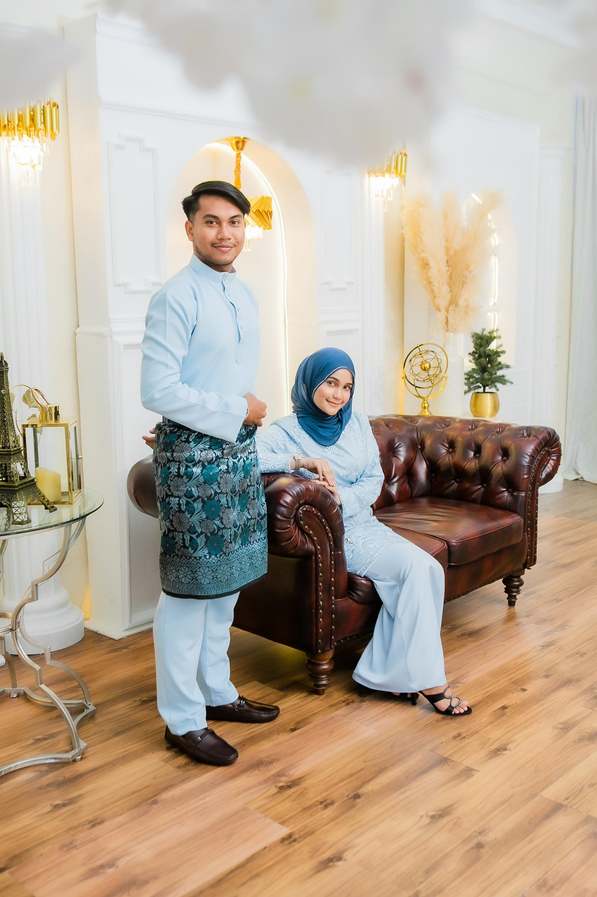

Nur Rosliyana Binti Mohd Roslan 💕

Sayangku Nur Rosliyana 🌸,
Terima kasih sebab habiskan masa jawab kuiz comel ni 😚. Kuiz ni i buat dengan penuh cinta 💕,
untuk ulang semula momen-momen manis kita. So kt sini i just nak cakap HAPPY BIRTHDAY TO YOU🥳❤️ HAPPY BIRTHDAY TO YOU🥳❤️❤️ HAPPY BIRTHDAY TO MY SAYANG PRINCESS🥹❤️❤️ HAPPY BIRTHDAY TOO YOUUUUUUUUU CINTA HATI B YG CANTIK DAN OMEL II SORANG NI😍❤️❤️❤️❤️
ALHAMDULILAHHHHH SAYANGGGGG DAHHH BESARR SEKARANG🥹❤️ DAH UMUR 21 TAHUNNN WOOO🤪😍❤️✨ So semogaaaa sayang sentiasa dimurahkan rezeki, dikurniakan kesihatan yg baik, dikurniakan segala kemudahan dalam apa juga ayang buat🥹❤️
dan semoga sayang dapat menjadi seorang kekasih, bakal isteri dan peneman i yg terbaik dalam selama-lamanya. Aamiin yaa mujeeb🤲❤️❤️❤️❤️❤️❤️
Terima kasih sayang kita kenal dan dah dua kali kita sambut birthday bersama ni sayang dah bagi mcm ii effort dan kasih sayang yg sangat ii hebat❤️❤️
Terima kasih sayang sbb sangat ii banyak bersabar dgn apa yg b buat🥹❤️ terima kasih sayang sbb x pernah henti berjuang walaupun mcm ii yg jadi dgn kita x kesah lah kita gaduh kecil
ke besar ke sayang xdk mood and letih ka tapi sayang tetap hebat dan xhilang rasa sayang tu🥹❤️ Terima kasih sayang untuk segalanyaa sayang x terucap selamani sayang🥹❤️❤️
i sangat ii sayang you dari mula kenal hingga sekarang sayang lah wanita yg terbaik b jumpa utk jadi bakal isteri b🥹❤️ sayanggggg i happy bila dpt dgr story sayang dpt dgr sayang gossip dan byk lagi lah🥹❤️
i rasa dkt dgn sayang mcm sayang duduk dgn i🥹❤️ bestnyaaaa sayang nak kawin cepat iiğŸ˜â¤ï¸â¤ï¸â¤ï¸ Terimaaaa kasih utk segala cinta hati b yg sayang dah bgi kt i selamani ni tau🥹❤️❤️❤️
I LOVEEEEE YOU I LOVEEEE YOUUUU SO MUCHHHHHHHHHH SAYANGGG CINTA HATI B YG PALING CANTIK DAN COMELLL COWANG NI😍❤️❤️❤️❤️❤️❤️❤️ SEMOGAAA SAYANG DAPAT TERUS JADI YG TERBAIK DAN TERUS TERUSSS CINTA I DGN SEPENUH HATI SAYANG🥹❤️
SAYANG DAH BESAR KOMITMEN AYANG PUN DAH BANYAK SEMOGA AYANG TERUS KUAT DAN TABAH TAU BABY UNTUK JAGA MAMA JAGA FAMILY SAYANG🥹❤️ TERUSKAN LEGASI AYAH🥹❤️ JAGA MAMA SAYANG MAMAA JGN PERNAH TINGGAL DOAKAN MAMA DAH AYAH TAU🥹❤️
SAYANG BELAJAR ELOK II JGN MALAS II DAN SENTIASA DOA NK BALAS BALIK JASA FAMILY YOU🥹❤️ MINTAK SEMOGA ALLAH PERMUDAHKAN SEGALA JALAN YG SUKAR BAGI YOU DAN SEMOGA TUHAN LIMPAHKAN REZEKI SEPERTI AIR ZAM ZAM YG X HENTI II KEPADA SAYANG DAN SEKELUARGA🥹❤️
SAYANG JAGA DIRI ELOK II TAU🥹❤️❤️ INSYAALAH SAYANG DAH BESAR SAYANG DAH BANYAK BERDIKARI SEKARANG🥹❤️ OKEYYY SAYANG??🥹❤️❤️❤️❤️ SOOOO BUBYEEE SAYANGGGGGGG CINTA HATI B YG OMELL II UCUK ACAM B YG PALING CANTIK KURUS DAN PRINCESS KESAYANGAN B SORANG NI👸🏻😘❤️❤️❤️❤️🤍🤍🤍🤍🤍🤍🤍🤍🤍🤍🤍🤍🤍🤍🤍🤍🤍🤍🤍🤍 I LOVEEEE YOUUUU SOOO MUCHHHHH SAYANGGG CINTA HATI B YG CANTIK II DAN COMELL II😍❤️❤️❤️❤️‍🔥❤️‍🔥❤️‍🔥❤️‍🔥